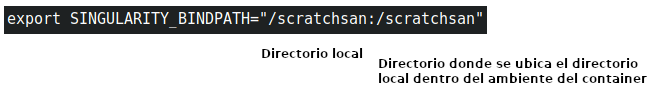

Software¶
Cluster Biologia Computacional¶
orthofinder¶
Orthofinder es un software para inferencia filogenetica de ortologos, arboles de genes y especies con unico nodo( rooted), eventos de duplicacion de genes y estadistica de genomica comparativa.
En el cluster de Biologia Computacional el software Orthofinder y sus dependencias necesarias se encuentran almacenados en una entidad llamada container (que incluye un sistema operativo minimo). Esta pieza unica o imagen(un archivo) se encuentra «lista para correr», es portable y se puede compartir a tiempo que los resultados son reproducibles.
Usted puede correr Ortofinder en el cluster de Biologia Computacional de por lo menos dos maneras:
En una sesion iteractiva donde los resultados se esperan en tiempos no mayores a tres(3) horas y
mediante scripts donde usted envia un trabajo que en entra a ser agendado y luego ejecutado; puede tomar mas de una(1) semana.
Correr Orthofinder en una sesion Interactiva via SRUN
Este procedimiento no requiere de un agendamiento para ejecutar sus procesos y disponer de los recursos(procesador, Memoria Ram, Discos de almacenamiento): Siempre y cuando se encuentren disponibles y su programa no requiera mas de tres(3) horas de procesamiento.
Primero, usted debe conectarse y abrir una sesion shell en el nodo «hercules1» del laboratorio de Biologia computacional.
Luego debe iniciar una sesion interactiva con uno de los nodos de procesamiento del cluster con el commando SRUN asi:

{kind=link}
- Una vez se inicie una sesion interactiva con un nodo del cluster, usted puede ejecutar el container orthofinder, ubicado en:
/localapps/orthofinder_2.5.4.sifCorrer el container Orthofinder en la sesion Interactiva
Para ejecutar el container orthofinder_2.5.4 se usa el software singularity. Usted debe primero comunicar a singularity los directorios en los que trabajara usando la variable SINGULARITY_BINDPATH
Por omision usted no requiere dar ningun valor a esta variable si solo va usar su directorio de trabajo o $HOME.
Si, por ejemplo desea trabajar en un directorio /scratchsan debe incluirlo en la variable SINGULARITY_BINDPATH asi:
{kind=link}
{kind=link}
Ejemplo 1: Del tutorial en (https://davidemms.github.io/orthofinder_tutorials/running-an-example-orthofinder-analysis.html)
Descargar los proteomas para el conjunto de especies raton, humano, rana, zebrafish, puffer Japones (Takifugu rubripes) and Mosca de la fruta (Drosophila melanogaster).
Creamos la carperta Proteomas por. eje en /scrtchsan/eparra/ vaya a https://www.ensembl.org/, como el primer sitio para buscar proteomas. Orthofinder requiere como entrada seciencias de aminoacidos para todas las proteinas codificadas desde genes en las especies de interes. Las secuencias dben estar en archivos separados con la extension .fa, .faa, .fasta .fas o .pep Los archivos que se requieren de descarga en la carpeta creada asi
- Humano, archivo fasta de proteinas
http://ftp.ensembl.org/pub/release-107/fasta/homo_sapiens/pep/Homo_sapiens.GRCh38.pep.all.fa.gz
Raton, Archivo fasta de proteinas
http://ftp.ensembl.org/pub/release-107/fasta/mus_musculus/pep/Mus_musculus.GRCm39.pep.all.fa.gz
Zebrafish, Archivo fasta de Proteina http://ftp.ensembl.org/pub/release-107/fasta/danio_rerio/pep/Danio_rerio.GRCz11.pep.all.fa.gz
Tropical clawed frog http://ftp.ensembl.org/pub/release-107/fasta/xenopus_tropicalis/pep/Xenopus_tropicalis.UCB_Xtro_10.0.pep.all.fa.gz
Takifugu rubripes> http://ftp.ensembl.org/pub/release-107/fasta/takifugu_rubripes/pep/Takifugu_rubripes.fTakRub1.2.pep.all.fa.gz
Drosophila melanogaster http://ftp.ensembl.org/pub/release-107/fasta/drosophila_melanogaster/pep/Drosophila_melanogaster.BDGP6.32.pep.all.fa.gz
Descomprimo los archivos.
las fasta descargados pueden contener muchos transcritos por gen, correr onrtofinder sobre todos los archivos podria tomar mucho tiempo, ortofinder provee un script que filtra unicamente los trasncritos mas largos por gen y sobre ellos se correra orthofinder
for f in *.fa; do python /opt/OrthoFinder/tools/primary_transcript.py $f; done
Como los nombres archivos son usados para referirse a alas especies, es mas facil hacer referencia a anombres cortos.